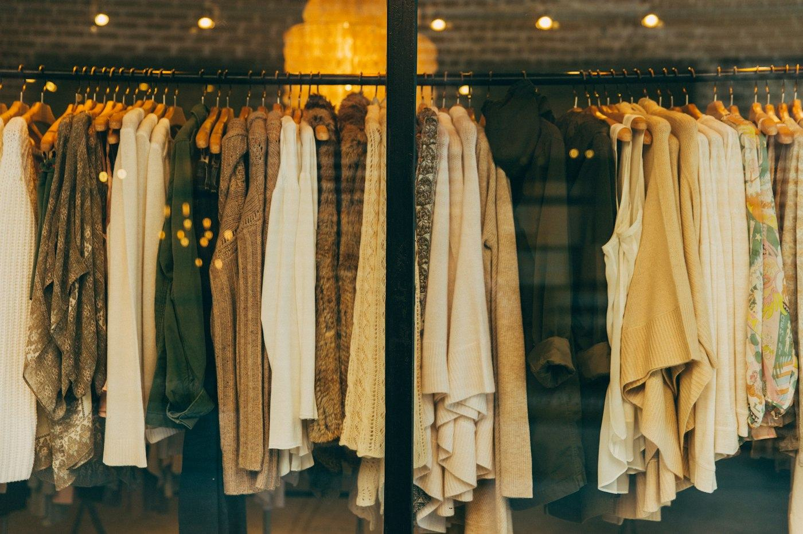

Histoire et distinctions
Autodidacte et visionnaire, il fait rayonner l'artisanat gabonais sur les podiums internationaux.

Jamais d'école de mode, toujours la passion
Créatif depuis l'enfance, il aide sa mère à la couture dès neuf ans et apprend en créant des robes pour elle et pour sa grand-mère. Au lycée, il organise son premier défilé. Il n'a jamais fréquenté d'école de mode : il apprend seul à maîtriser le raphia.
Président de l'Association des stylistes et créateurs gabonais, il ouvre la voie à une nouvelle génération de designers. Il a été décoré de l'Ordre du Mérite gabonais.
Un parcours sur les podiums
- Enfance
Il aide sa mère à la couture dès l'âge de neuf ans.
- Lycée
Il organise son premier défilé.
- Saint-Étienne
Premier prix du meilleur défilé à la Biennale internationale du design.
- Libreville
Président de l'Association des stylistes et créateurs gabonais.
- Novembre 2025
Défilé à Libreville devant les présidents gabonais et français.
- Février 2026
Achievement Award au Fashion Annual Show de Paris.
« Je n'ai pas d'âge, comme Karl. »
Chouchou Lazare, Africanews, mars 2026Une création pour vous
Mariage traditionnel, gala, défilé : chaque pièce est imaginée, tissée et ajustée à l'atelier, à vos mesures.